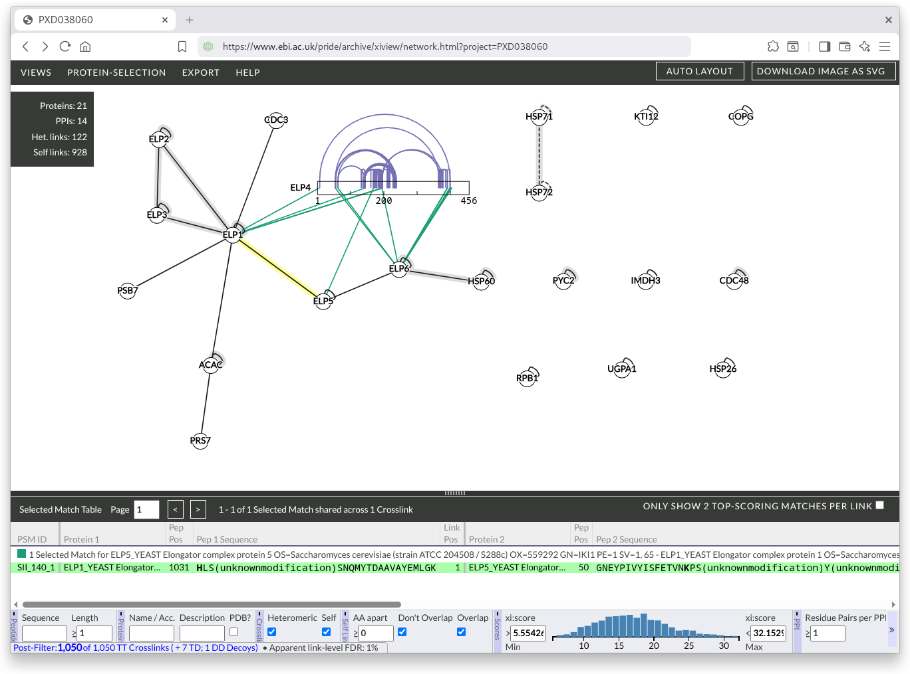
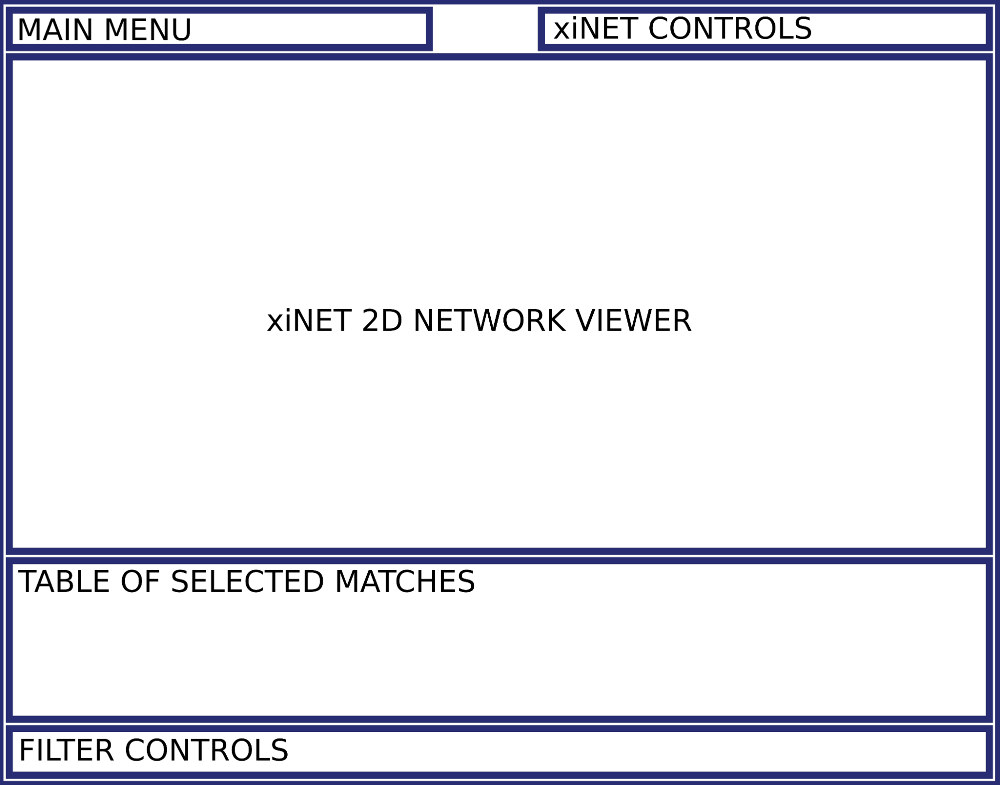

Combe, C. W., Graham, M., Kolbowski, L., Fischer, L., & Rappsilber, J. (2024). xiVIEW: Visualisation of Crosslinking Mass Spectrometry Data. Journal of Molecular Biology, 436(17), 168656. https://doi.org/10.1016/j.jmb.2024.168656
xiVIEW allows you to visualise crosslinking Mass Spectrometry data, it incorporates xiSPEC for visualising spectra and xiNET for visualising the crosslink network.
For an example visit https://www.ebi.ac.uk/pride/archive/xiview/network.html?project=PXD038060, you should be looking at something like this:

In the screenshot above ELP4 has been expanded to show residue resolution by right-clicking on it and choosing 'Expand protein' from the menu. The interface pictured above is organised into the following panels:
Descriptions of these panels with links to further information: - Main menu - contains dropdown menus for: - Views - Protein Selection - Export - Help (how you got here) - xiNET controls - buttons to: - automatically layout 2D network - download 2D network image - xiNET 2D network viewer - Table of selected matches - Filter controls
The Selected Match Table acts as the bridge to the underlying raw data displayed in the Spectrum View - open the xiSpec Feature Support section in this link for spectrum viewer use instructions. Selecting a match in this table will displaying the underlying raw data in the Spectrum View.
Viewing Spectra Open a spectrum: Click a link in the network view. See the list of supporting matches in the table of selected matches, you may need to drag upwards the bar that divides the table from the network. Many matches can support one crosslink, a match can also support more than one crosslink if there is ambiguity about the peptide position (protein inference problem). Click a match in the table. The annotated spectrum should appear. Video Tuorial
There are a number of different views available for exploring cross-links within xiVIEW. One, the XiNet view, is a constant in the main window of xiView. The others are available via the "View" drop-down menu in the menu bar along the top of the window.
The views themselves can be categorised as three basic types:
Those that show positional cross-link data:
Those that show cross-link metadata:
Those whose main purpose is to act as sanity checks:
All views also share a number of common operations and functionalities such as filtering and selection.
The Export menu in the top menu bar has a number of options for outputting various aspects of the current filtered dataset. Simply click the required option and the exported file will be downloaded to your computer.
Filtered cross-links, matches, protein-protein interactions, residue pairs and protein accession numbers can all be saved as CSV files, and filtered matches can also be saved in Skyline's SSL format. The final option "Make Filtered Xi URL" offers the option to export a URL that includes the current filter state. Upon re-opening in a browser this URL will set the filter to the values in the URL as a convenient shortcut.
Finally, almost every view has the option to save their current representation as a SVG or PNG file, which again includes a timestamp and filter state within the filename. Most of the exported images also include a colour key, and most views generate SVG images that include a link to return to the search.
xiNET network viewer and residue level information: Click left mouse button on background and drag to pan display Mouse wheel to zoom AUTO in top right to try to tidy network layout up Right click a protein in the network. Select the ‘Expand Protein’ in the context menu They can be collapsed by right clicking again.
Filtering Filter controls are in the menu along the bottom. (Individual parts of the filter can be hidden by clicking the ‘-’ icon, there’s also the ‘>>’ icon if controls are going off screen.)
Explain the label “apparent link-level FDR” = ((count TD crosslinks - count DD crosslinks) / count TT crosslinks) * 100 If you have almost as many DD as TD you will see a low FDR estimate but something has gone wrong Threshold Pass/Fail Fairly self explanatory but not that useful (could look at failing matches if interested in specific interaction) This part of interface is different in the example in the practical - to be discussed before practical Target / Decoy Filters target and decoys - can’t see decoys in network or 3d view so just ignore this for moment. Peptide: Sequence - search for specific peptide sequence Length - minimum peptide length Ambig - show crosslinks where peptide position is ambiguous Find the ambiguous crosslink Why is it ambiguous? (might want to close some windows and tidy things up by clicking AUTO in the top right) Locate the proteins with the ambiguous link Expand the proteins to bars Right click the bars and select ‘AA’ for the scale Mouse over the crosslink You should see the peptide the occurs in more than one place highlighted Protein Filter on Name accession Filter on description Filter on whether it was in the PDB file loaded Crosslink Heteromeric - “between” links, “protein heteromeric” links Self - “within” link, may still be between different instances of the same protein (between chains with same sequence) Self links may be inter molecular or intra molecular; but heteromeric links are always inter molecular. Self links - further filters for self links: AA apart - only show self links with more than specified number of animo acids between link sites. Don’t overlap / Overlap Self links with overlapping peptides must be inter-molecular (between similar chains). Look for an example. Distance Visible because a 3d structure is loaded Open 3d view to see effect Match score - gives an indication of confidence Shows all data loaded, not the filtered subset Reside Pairs per PPI Minimum number of linked residue pairs for a protein-protein interaction Run / Scan Filter on spectra details
Import The IMPORT menu allows you to integrate your crosslinking results with other datasets. There are five types of data you can import : PDB – maps the crosslink data onto a 3d structure STRING – downloads data from the STRING database then colours the links according to whether or not they are known interactions; this requires that you have correct uniprot identifiers for the proteins in your data (determined by the FASTA file used for the search) and that you provide an NCBI taxon id for the organism EDGE METADATA – associates data uploaded in a CSV file with crosslinks (i.e. residue to residue) or protein-protein interactions the CSV file format is at http://localhost/xiUI_lab/xidocs/html/import/crossmeta.html NODE METADATA – associates data uploaded in a CSV file with proteins; the CSV file format is at http://localhost/xiUI_lab/xidocs/html/import/proteinmeta.html SEQUENCE ANNOTATIONS – colours regions on the protein sequences according to uploaded data, these then appear as options in the ANNOTATIONS menu; the CSV file format is at http://localhost/xiUI_lab/xidocs/html/import/userannotations.html You can see sequence annotations that are automatically available under the ANNOTATIONS menu. Once metadata has been imported, links or proteins can be coloured according to it via the VIEWS > LEGEND & COLOURS menu. Edge meta data is available in the histogram and scatterplot views.
Views Legends and Colours Display and change the colour schemes Show switch to Distance colour scheme Demonstrate slider Protein colours can also be set manually by right clicking them in the network view. Circular view - Alternate network view - Also synchronised selection and highlighting 3D view - have looked at already - Show all possible alternative links - Show only selected links - Show distance labels - note menu for 3d exports to other 3d modelling tools Matrix View - shows contact map if 3d structure loaded - distance colour scheme applies to contact map Protein Info - left click a protein to select and display details in this window Spectrum - can reannote spectra - continuous fragmentation of peptide is good Histogram - Explain some metadata is already present in dataset – mass, mass error, charge, sometimes elution Scatterplot Alignment - alignment between search and PDB sequences used to plot crosslinks onto the 3d structure Search Summaries - metadata about the search GO terms view - confusing - ignore
Protein Selection Hide selected (or unselected) proteins Add connected neighbours to the selection Select by text filter
Groups Can define groups which can then be collapsed AUTO GROUP trys to define groups for protein complexes based on GO annotations - try it Groups can be expanded and collapsed by right clicking Sub groups should also work Groups can be defined manually by selecting proteins and entering the text for the name of the group Annotations Shows Uniprot domain annotations Annotations on what residues are crosslinkable and digestible will appear here in the practical. Export Various comma separated value export formats Export Links Matches Residue Views have their buttons to export images Show SVG Export from Spectrum, Circle, xiNET